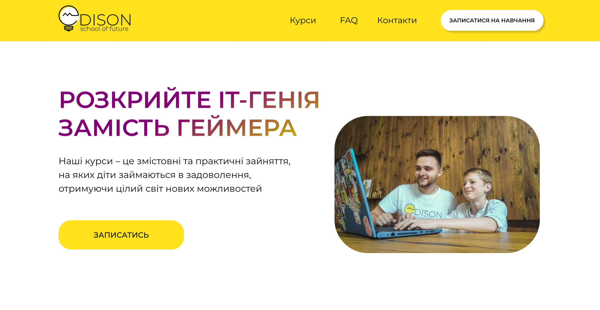
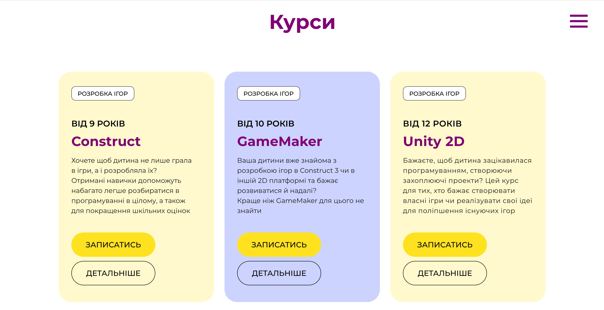
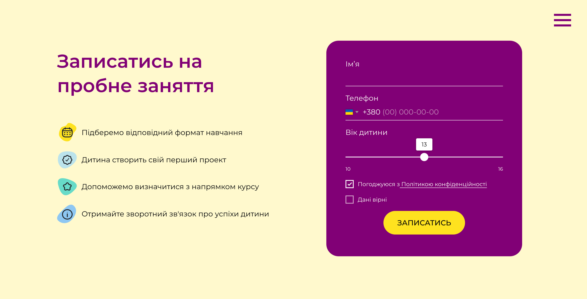
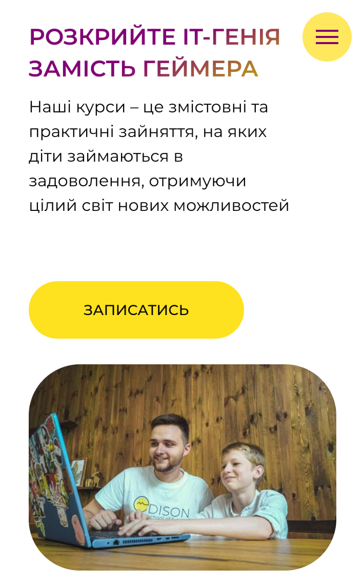
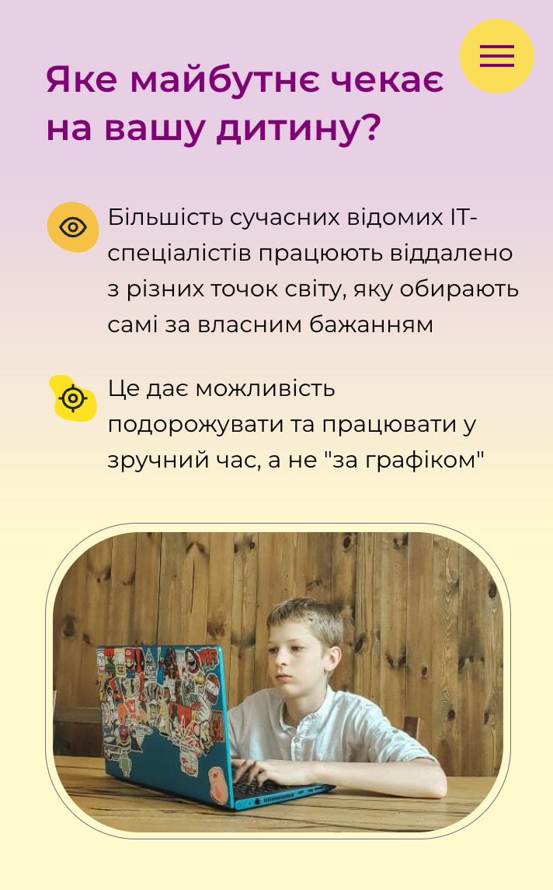
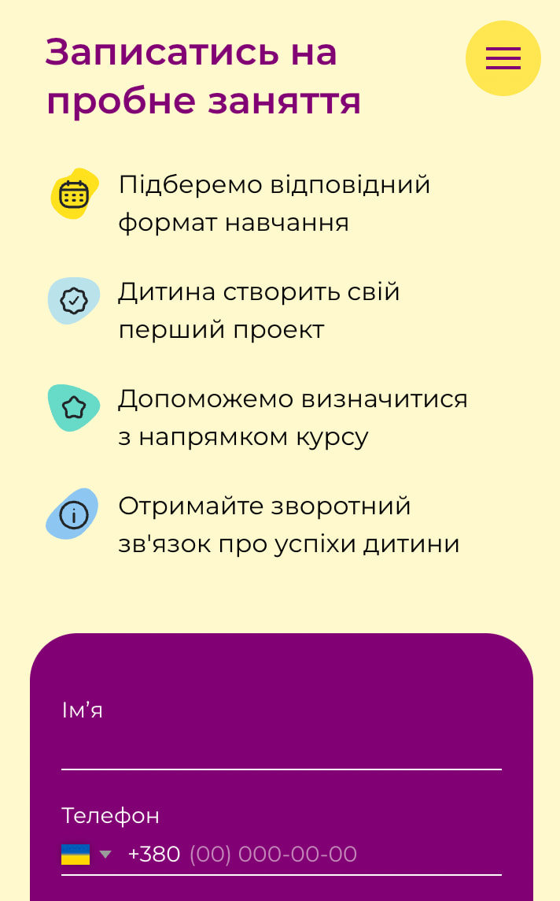

Edison IT school: designing a website that converts parents into trial lesson bookings
End-to-end design and build for an EdTech startup offering coding courses for children aged 9 to 16. Designed to convert paid social traffic into trial lesson signups. (Site is in Ukrainian. The client's audience is Ukrainian-speaking.)
The challenge
Edison was a small EdTech business offering programming courses for children in Ukraine. The school had a product and a teacher, but no website and no way to convert interested parents into bookings. All enquiries came through word-of-mouth and social media, with no scalable acquisition channel.
The primary goal was specific: convert website visitors into free trial lesson signups. Not just inform. Convert. That single objective shaped every design decision on the page.
The site needed to speak to two audiences simultaneously: children, who needed to feel excited about learning to code, and their parents, who needed to feel confident the school was safe, structured, and worth their time.

My role
Responsibilities
- UX and UI design and layout structure
- Visual identity direction: palette, styles, accents
- Designing the user journey from landing to registration
- Building and launching the website using no-code tools
- Responsive design for mobile users
Tools
- Figma: design and prototyping
- Tilda: no-code build with custom code modifications
- Google Analytics: traffic and conversion tracking
Users and their needs
Parents (primary decision makers)
- Is this school credible and trustworthy?
- What will my child actually learn?
- Is it suitable for their age and level?
- How do I sign them up without friction?
Children (influencers of the decision)
- Does this look fun and interesting?
- Will I learn things that feel relevant?
- Does it feel like school, or something different?
User journey
How parents move from ad click to trial booking
The site was used as a paid ad landing page, so every visitor arrived with intent, but intent alone doesn't convert. Mapping the journey helped identify where design needed to do the most work.
Paid ad — Google or Facebook
Parent sees ad targeted by age group or interest in children's coding
Real teacher photo · Course overview · Age range
Warm, energetic design — reassuring for parents, engaging for children
Looks untrustworthy or irrelevant. Parent returns to search.
9 to 12 · 13 to 16 — what they'll learn
Grouped by age so parents immediately see what's relevant for their child
Age group or course format doesn't match. Parent leaves.
Teacher profile · Advantages · Testimonials
Humanises the school — answers "who is actually teaching my child?"
Not enough trust built. Parent exits without signing up.
Book a free lesson — repeated at every pause point
Low-commitment ask. Appears in hero, after courses, after trust section
Not ready to commit yet. May return later.
✓ Trial lesson booked
Parent submits signup form · school follows up to confirm
Design decisions
The design had to work hard on trust and energy simultaneously: reassuring for parents, engaging for children, without splitting into two separate experiences.
Real teacher photography in the hero
Stock photography reads as generic and untrustworthy. Using a real photo of the teacher in the hero section immediately humanised the school and answered the parent's first unspoken question: who is actually teaching my child?
Age-grouped course cards as the primary navigation structure
Rather than listing all courses in a flat list, I grouped them by age range (9 to 12, 13 to 16) so parents could immediately identify what was relevant. Reducing irrelevant content is as important as showcasing relevant content.

Free trial CTA repeated at every natural pause point
The call to action appeared in the hero, below the course cards, after the trust section, and in the footer. Parents who were persuaded at different points in the page could act immediately without scrolling back up.

Warm palette and friendly typography to lower anxiety
Yellow and purple accents created energy without aggression. The overall tone was deliberately warm rather than corporate. Parents choosing an extracurricular activity for their child respond differently than B2B buyers.

Build and launch
Built using Tilda with custom code modifications to extend functionality beyond the platform's defaults. Responsive across mobile and desktop. Google Analytics configured from launch to track traffic sources and conversion events. The site also included an integrated online payment flow — parents could purchase a course directly on the website and receive an automated receipt by email.
The site served as the landing destination for paid advertising campaigns during the school's student recruitment periods.



Outcome
The site generated 778 trial lesson leads from 8,100 sessions at a 9.6% conversion rate — nearly double the EdTech industry average of 2–5%. Over 63% of traffic came from mobile, validating the mobile-first approach taken during design.
What I'd do differently
With access to the ad campaign data, I'd have A/B tested the hero CTA copy and the course card layout: those are the highest-leverage elements on a conversion page. I'd also have added a parent testimonial section above the fold rather than lower down, since social proof for a children's education service carries disproportionate weight in the decision.